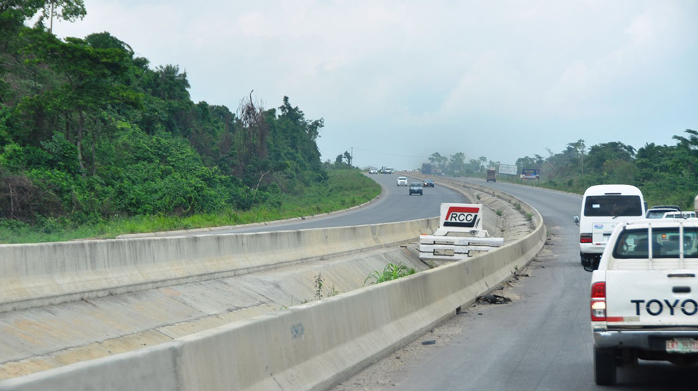

Lagos-Ibadan Expressway: Progress and Challenges
October 15, 2023
The ongoing reconstruction of the Lagos-Ibadan Expressway represents one of Nigeria's most significant infrastructure projects. This article examines the progress made, remaining challenges, and the impact on regional trade.
Read More